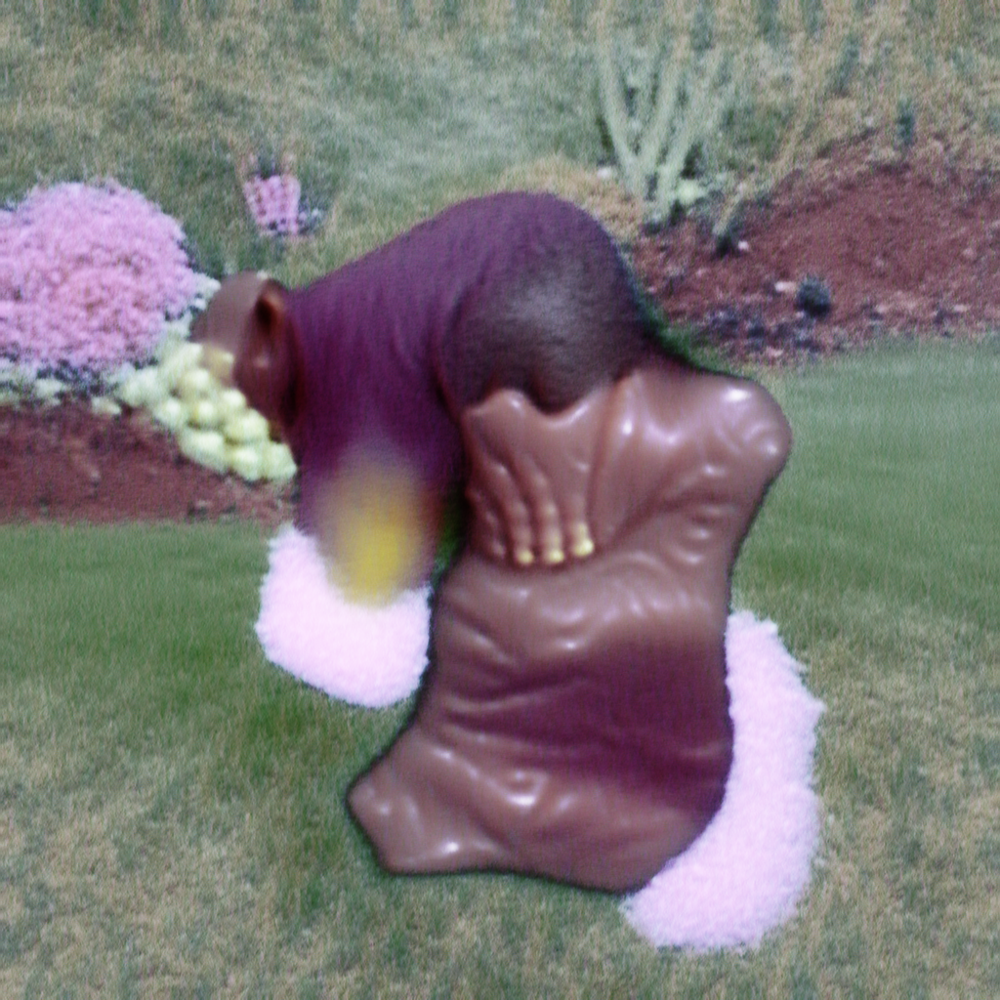

RUPTURE

Rupture! Word: it contains hear heart pounding ~ It is also a spinning wheel.
Pretty much
a place
of remaining, unforgivable who found a street heavy appearance.
As far as she could thought about
all-these-hair-less
deeper and succeeded /
and she succeeded more deeply / not always talking about that
somethingsomething